02. Agent 기초 — Tool · Memory · Middleware · Structured Output
이 자료는 langchain/02 폴더의 실습 노트북 8개(01~08)를 관통하는 핵심 개념을 압축한 강의 교재입니다.
Agent가 실시간 정보에 접근하도록 돕는 Tool, 대화 맥락을 기억하는 Memory,
Agent의 흐름을 세밀하게 제어하는 Middleware, 그리고 Agent의 답변을 정해진 데이터 구조로
강제하는 Structured Output까지 — Agent를 이루는 네 기둥을 순서대로 조립해 봅니다.
| 장 | 주요 내용 |
|---|---|
| 1장 Agents | Tool 기초 · Tool 응용 1 · Tool 응용 2 |
| 2장 Memory | Memory 기초 |
| 3장 Middleware | Middleware 기초 · Built-in middleware · Custom middleware |
| 4장 Structured output | 구조화된 답변 생성 |
(복습) Agent란?
먼저 Agent의 정의부터 복습합니다.
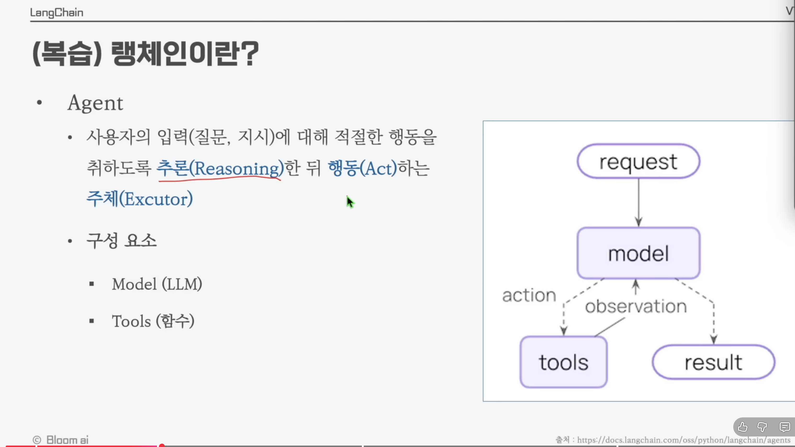
Agent란 사용자의 입력(질문, 지시)에 대해 적절한 행동을 취하도록 추론(Reasoning)한 뒤 행동(Act)하는 주체(Executor)입니다.
Agent의 구성 요소
- Model (LLM) — 추론과 의사결정을 담당하는 두뇌
- Tools (함수) — 실제 행동(검색, 계산, API 호출 등)을 수행하는 손과 발
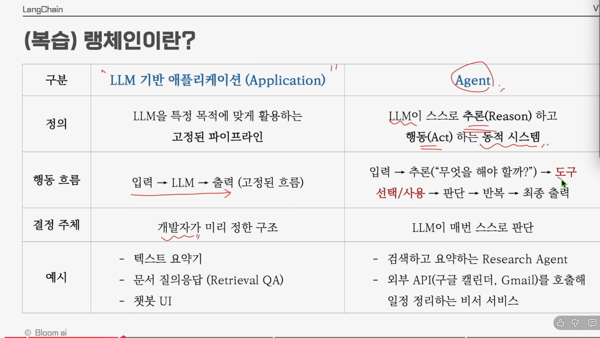
| 구분 | LLM 기반 애플리케이션 | LLM 기반 Agent |
|---|---|---|
| 정의 | 고정된 파이프라인 | LLM이 스스로 추론하고 행동하는 동적 시스템 |
| 행동 흐름 | 입력 → LLM → 출력 | 입력 → 추론 → 도구 선택/사용 → 판단 → 반복 → 최종 출력 |
| 결정 주체 | 개발자가 미리 정한 구조 | LLM이 매번 스스로 판단 |
1.1 Tool 기초
1.1.1 Tool이 왜 필요한가?
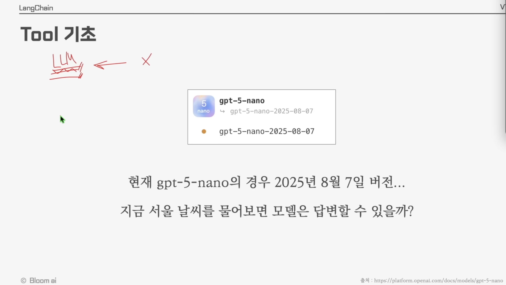
LLM 모델은 학습 데이터의 시간적 한계(Knowledge Cutoff)가 있습니다.
예를 들어 gpt-5-nano의 학습 데이터는 특정 날짜까지만 포함됩니다.
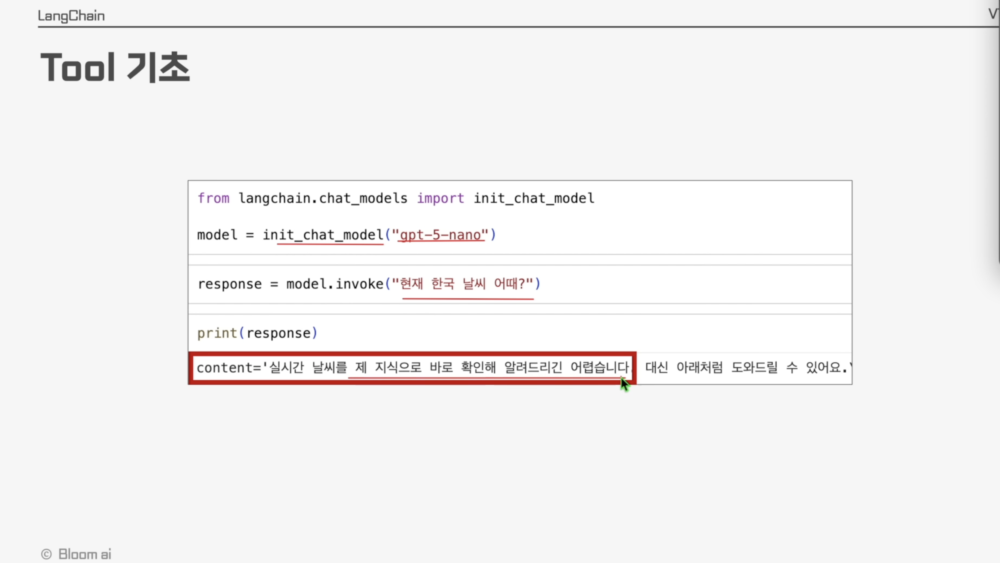
따라서 "현재 한국 날씨 어때?" 처럼 실시간 정보를 묻는 질문에는 모델이 답변하지 못합니다.
content='실시간 날씨를 제 지식으로 바로 확인해 알려드리기 어렵습니다...'
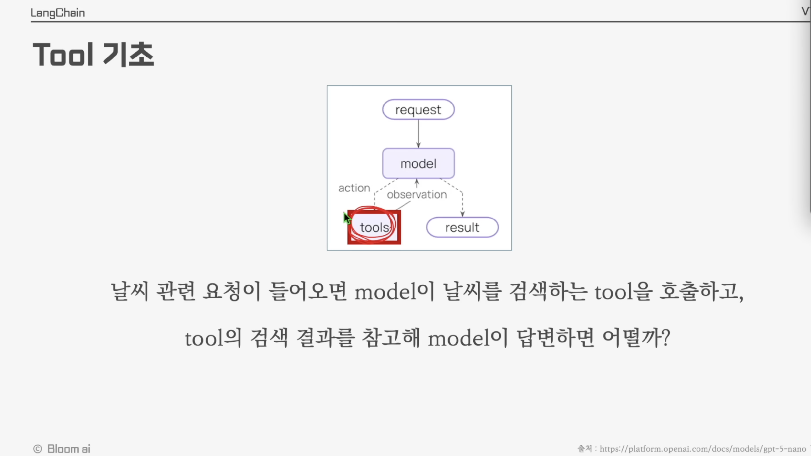
이 문제를 해결하는 것이 바로 Tool입니다. 날씨 관련 요청이 들어오면 model이 날씨를 검색하는 tool을 호출하고, tool의 검색 결과를 참고해 model이 답변합니다.
1.1.2 Tool이란?
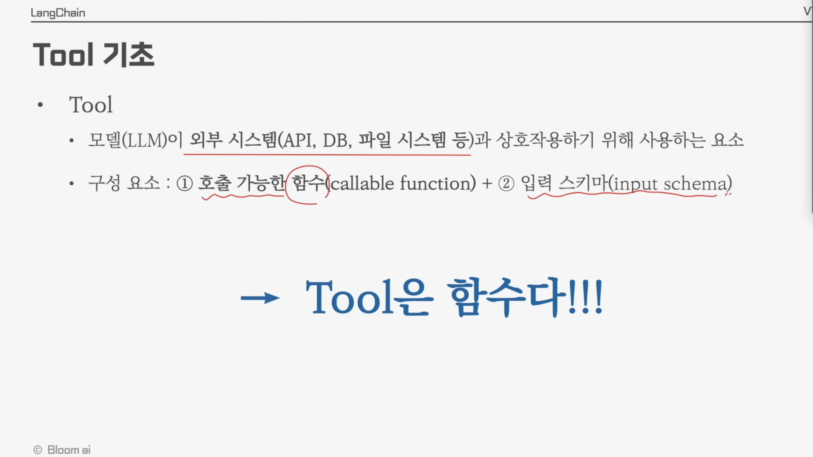
Tool은 모델(LLM)이 외부 시스템(API, DB, 파일 시스템 등)과 상호작용하기 위해 사용하는 요소입니다.
구성 요소 : ① 호출 가능한 함수(callable function) + ② 입력 스키마(input schema)
1.1.3 Tool 작성법
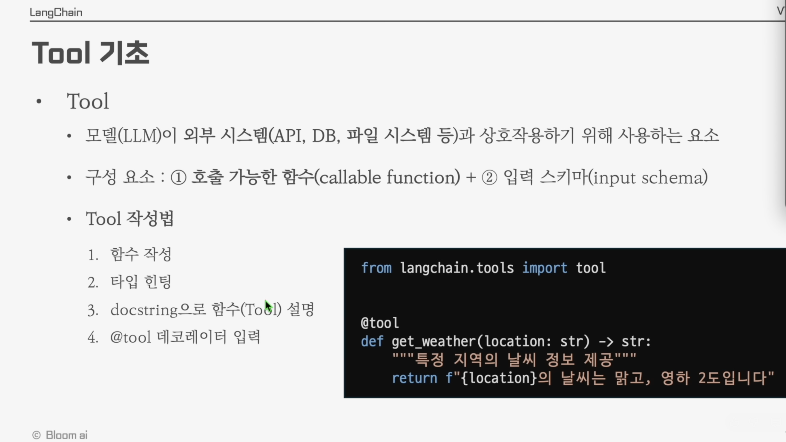
Tool을 만드는 방법은 단 4단계입니다.
파이썬 함수로 실제 로직을 구현
입력·출력 타입을 명시 → LLM이 인자를 정확히 채울 수 있게 됨
함수(Tool) 설명 → LLM이 이 Tool을 언제 쓸지 이해
함수 위에 데코레이터를 붙여 Tool로 등록
from langchain.tools import tool
@tool
def get_weather(location: str) -> str:
"""특정 지역의 날씨 정보 제공"""
return f"{location}의 날씨는 맑고, 영하 2도입니다"docstring이 LLM에게 "이 Tool을 어떤 상황에 써야 하는지" 알려주는 설명서 역할을 합니다.
설명이 정확할수록 LLM이 올바른 Tool을 선택합니다.
1.1.4 Tool과 Model 연결 — Agent 생성
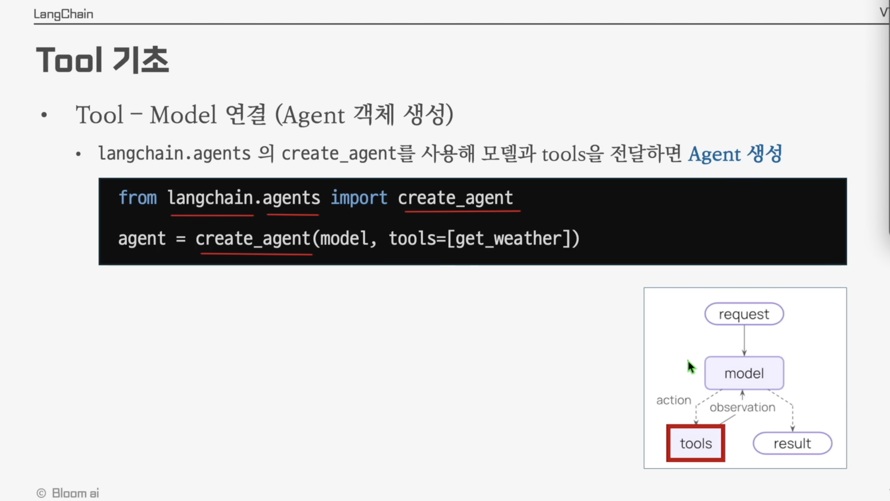
langchain.agents의 create_agent를 사용해 모델과 tools를 전달하면 Agent가 생성됩니다.
from langchain.agents import create_agent
agent = create_agent(model, tools=[get_weather])model)은 생각만 하는 두뇌이고, Tool들은 손과 발입니다.
두뇌만 있으면 "서울은 아마 맑겠죠?" 하고 상상해서 말할 뿐이지만, 손발이 붙으면 직접 창밖(날씨 API)을
확인하고 사실을 말합니다. create_agent(model, tools=[...])는 바로 이
두뇌에 손발을 붙여 '일할 줄 아는 직원(Agent)'을 채용하는 것입니다.
1.1.5 Agent 실행
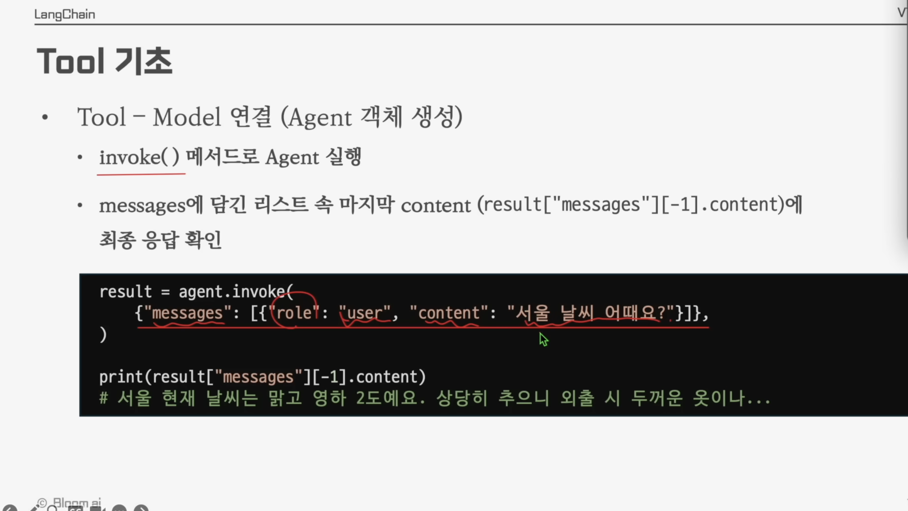
invoke() 메서드로 Agent를 실행합니다. 입력은 messages 키를 가진 딕셔너리이며,
최종 응답은 result["messages"][-1].content에서 꺼냅니다.
result = agent.invoke({
"messages": [{"role": "user", "content": "서울 날씨 어때요?"}],
})
print(result["messages"][-1].content)서울 현재 날씨는 맑고 영하 2도예요. 상당히 추우니 외출 시 두꺼운 옷이나...
1.1.6 Agent 내부 동작 — messages 구조 해부
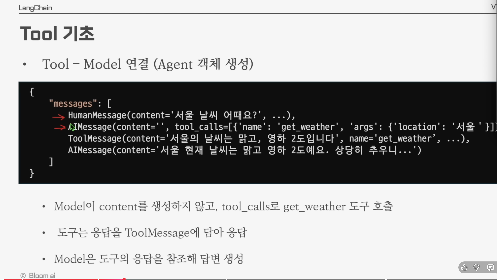
Agent를 실행하면 내부적으로 여러 메시지가 쌓입니다.
{
"messages": [
HumanMessage(content='서울 날씨 어때요?', ...),
# Model이 content를 생성하지 않고, tool_calls로 get_weather 도구 호출
AIMessage(content='', tool_calls=[{'name': 'get_weather', 'args': {'location': '서울'}}]),
ToolMessage(content='서울의 날씨는 맑고, 영하 2도입니다', name='get_weather', ...),
AIMessage(content='서울 현재 날씨는 맑고 영하 2도예요...'),
]
}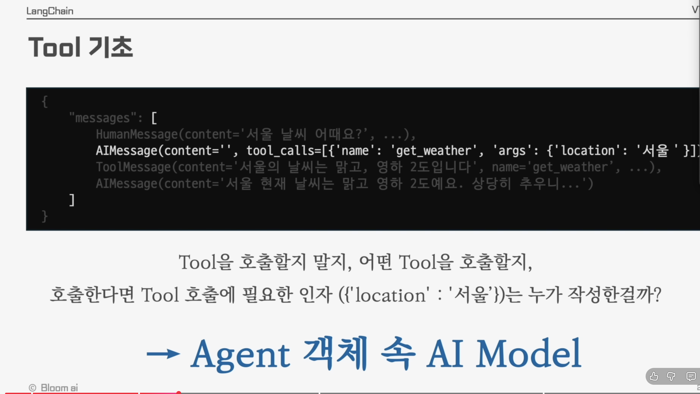
{'location': '서울'})는
누가 작성할까? → Agent 객체 속 AI Model이 스스로 결정합니다.
1.1.7 Agent 작동 순서 정리
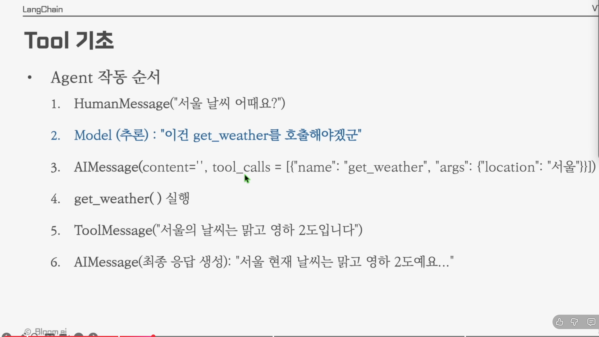
"서울 날씨 어때요?" 질문 시 Agent 내부에서 일어나는 6단계 흐름입니다.
HumanMessage("서울 날씨 어때요?") 전달
"이건 get_weather를 호출해야겠군" 추론
AIMessage(tool_calls=[...]) 생성
get_weather() 실행
ToolMessage("...맑고 영하 2도...") 반환
Tool 결과를 참고해 최종 AIMessage 생성
1.2 Tool 응용 1 — 여러 Tool + System Message
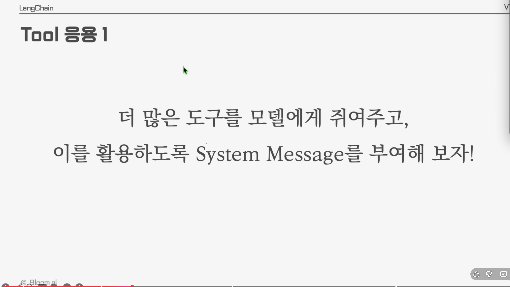
더 많은 도구를 모델에게 쥐어주고, 이를 활용하도록 System Message를 부여해 봅니다.
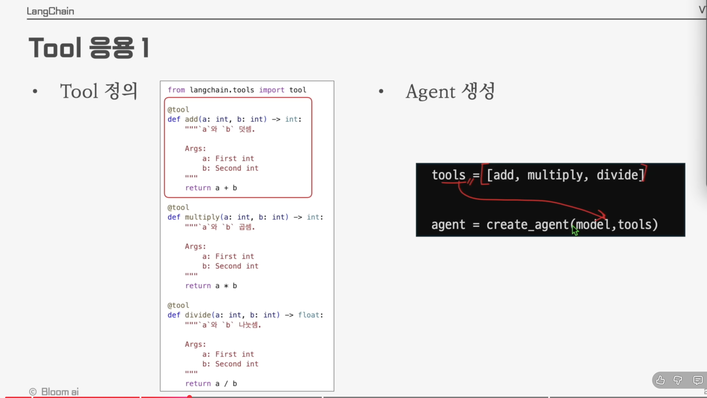
from langchain.tools import tool
from langchain.agents import create_agent
@tool
def add(a: int, b: int) -> int:
"""`a`와 `b` 덧셈.
Args:
a: First int
b: Second int
"""
return a + b
@tool
def multiply(a: int, b: int) -> int:
"""`a`와 `b` 곱셈.
Args:
a: First int
b: Second int
"""
return a * b
@tool
def divide(a: int, b: int) -> float:
"""`a`와 `b` 나눗셈.
Args:
a: First int
b: Second int
"""
return a / b
tools = [add, multiply, divide]
# system_prompt: LLM이 확률 기반으로 답을 직접 내놓는 것을 방지하기 위해
# "반드시 tool을 사용하라"는 지시를 추가합니다.
agent = create_agent(
model,
tools=tools,
system_prompt="당신은 계산기입니다. 반드시 도구를 사용하여 계산을 수행해야 합니다."
)system_prompt에
"반드시 Tool을 사용하라"는 지시를 명시해야 합니다.
system_prompt가 바로 이 감독관의 규칙입니다.
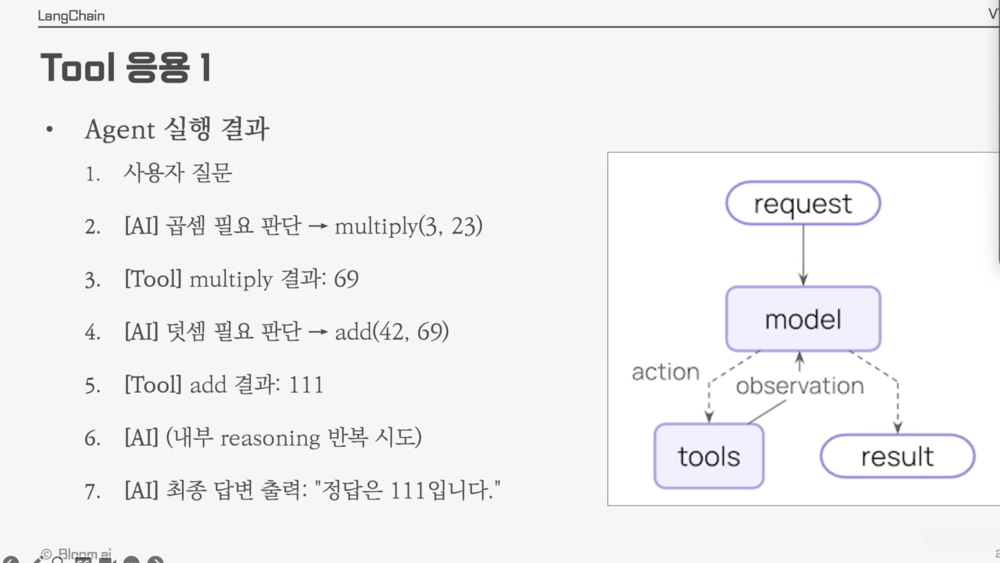
"3 × 23 + 42를 계산해줘" 요청 시 Agent가 단계별로 추론하며 Tools를 호출하는 과정입니다.
"3 × 23 + 42를 계산해줘"
multiply(3, 23)
69
add(42, 69)
111
반복 시도
"정답은 111입니다."
1.3 Tool 응용 2 — 외부 API 연동
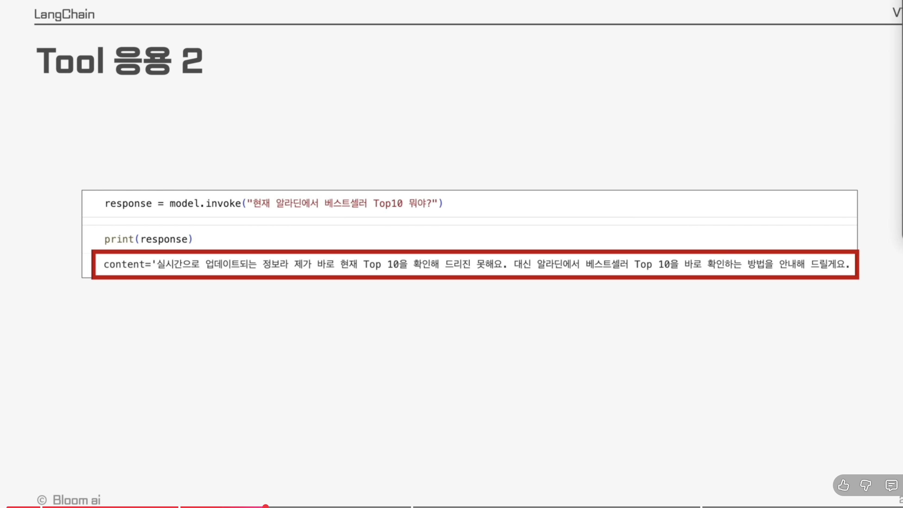
"현재 알라딘에서 베스트셀러 Top10 뭐야?" 처럼 실시간으로 업데이트되는 정보는 모델이 직접 답변하지 못합니다.
content='실시간으로 업데이트되는 정보라 제가 바로 현재 Top 10을 확인해 드리진 못해요...'
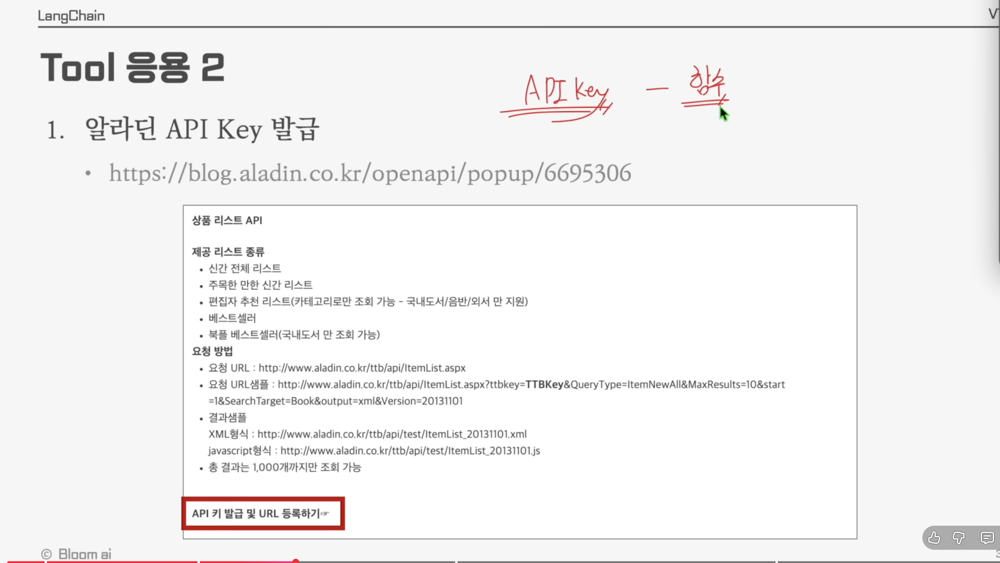
이를 해결하려면 알라딘 Open API를 호출하는 Tool을 만들면 됩니다.
알라딘 API Key 발급
Tool 함수 내에서 requests.get(url, params=params)으로 API 호출
Agent에 해당 Tool을 장착 → 실시간 베스트셀러 정보 조회 가능
import requests
from langchain.tools import tool
@tool
def get_aladin_bestsellers(count: int = 10) -> list:
"""알라딘 API를 사용하여 현재 가장 인기 있는 베스트셀러 도서 목록을 가져옵니다."""
url = "http://www.aladin.co.kr/ttb/api/ItemList.aspx"
params = {
"ttbkey": ALADIN_API_KEY,
"QueryType": "Bestseller",
"MaxResults": min(count, 50),
"SearchTarget": "Book",
"output": "js",
"Version": "20131101"
}
response = requests.get(url, params=params)
data = response.json()
return [
{"title": item.get("title"), "author": item.get("author")}
for item in data.get("item", [])
]count=5 인자를 추출해
get_aladin_bestsellers(count=5)를 호출합니다. 이것이 가능한 이유는 함수의
docstring과 타입 힌트를 LLM이 읽고 이해하기 때문입니다.
ttbkey)이고요,
베스트셀러(QueryType) 목록을 5개(MaxResults)만,
도서(SearchTarget) 기준으로 주세요." 사서(서버)는 이 요청을 알아듣고 목록을
돌려줍니다. @tool은 이 "전화 거는 절차"를 LLM이 스스로 다이얼링할 수 있게 포장해 준 것입니다.
2.1 Memory 기초
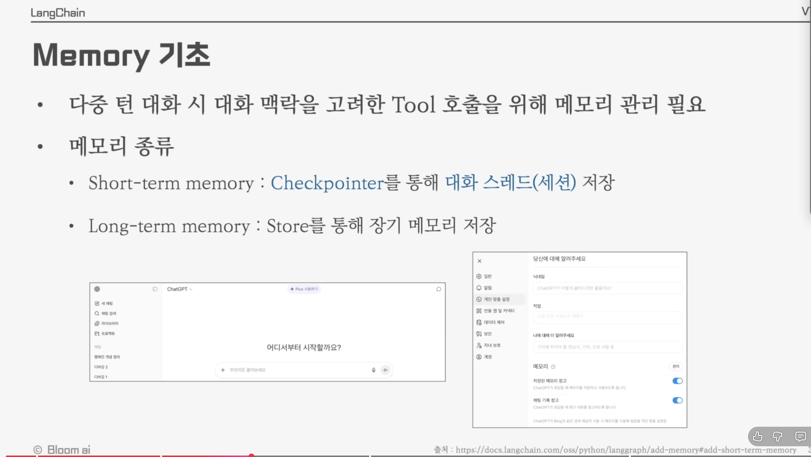
다중 턴 대화 시 대화 맥락을 고려한 Tool 호출을 위해 메모리 관리가 필요합니다.
메모리 종류
| 종류 | 저장 방식 | 용도 |
|---|---|---|
| Short-term memory | Checkpointer를 통해 대화 스레드(세션) 저장 | 대화 중 문맥 유지 |
| Long-term memory | Store를 통해 장기 메모리 저장 | 사용자 선호도, 과거 정보 유지 |
2.1.1 Short-term Memory — InMemorySaver
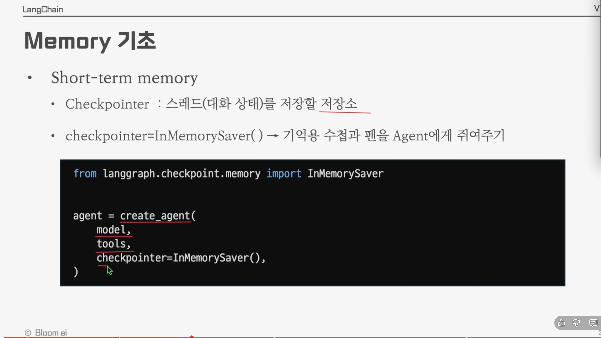
Checkpointer는 스레드(대화 상태)를 저장할 저장소입니다. InMemorySaver()는
메모리 내에 대화를 저장하는 가장 기본적인 Checkpointer로, "기억용 수첩과 펜을 Agent에게 쥐여주기"와 같습니다.
from langgraph.checkpoint.memory import InMemorySaver
agent = create_agent(
model,
tools,
checkpointer=InMemorySaver(),
)InMemorySaver()가 바로 이 수첩이고, checkpointer=로 넘기는 행위가
상담사(Agent)에게 그 수첩을 쥐여주는 것입니다.
2.1.2 thread_id로 대화 세션 구분
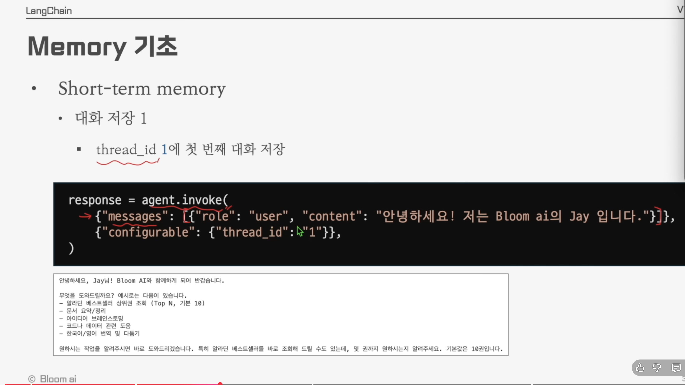
invoke() 호출 시 configurable 딕셔너리에 thread_id를
지정합니다. 같은 thread_id를 사용하면 이전 대화가 이어집니다.
# thread_id 1에 첫 번째 대화 저장
response = agent.invoke(
{"messages": [{"role": "user", "content": "안녕하세요! 저는 Bloom ai의 Jay입니다."}]},
{"configurable": {"thread_id": "1"}},
)
print(response["messages"][-1].content)
# 같은 thread_id로 이어서 대화
response = agent.invoke(
{"messages": [{"role": "user", "content": "제 이름이 뭐라고 했죠?"}]},
{"configurable": {"thread_id": "1"}},
)
print(response["messages"][-1].content)안녕하세요, Jay님! Bloom AI와 함께하게 되어 반갑습니다... 당신은 Jay라고 하셨습니다.
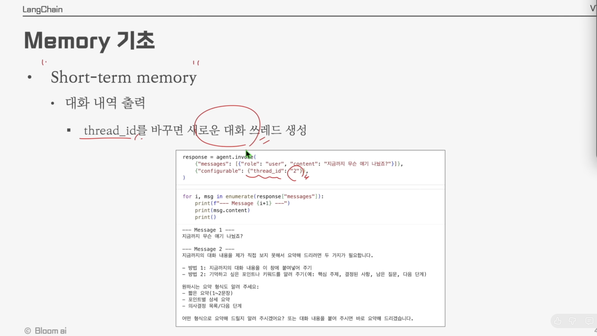
thread_id를 바꾸면 새로운 대화 스레드가 생성됩니다. 이전 대화 내용을 전혀 모르는 상태에서 시작합니다.
# thread_id를 2로 변경 → 새로운 대화 스레드
response = agent.invoke(
{"messages": [{"role": "user", "content": "지금까지 무슨 얘기 나눴죠?"}]},
{"configurable": {"thread_id": "2"}},
)
print(response["messages"][-1].content)지금까지의 대화 내용을 제가 직접 보지 못해 요약해 드리려면 두 가지가 필요합니다...
thread_id는 대화방 번호와 같습니다. 같은 번호면 이전 대화가 이어지고,
다른 번호면 완전히 새로운 대화가 시작됩니다.
thread_id는 메신저의 채팅방과 똑같습니다.
"엄마와의 대화방"에 들어가면 어제 나눈 얘기가 그대로 이어져 있고, "친구와의 대화방"으로 옮기면
완전히 다른 맥락이 펼쳐지죠. 번호가 같으면 같은 방, 번호가 다르면 다른 방입니다.
3.1 Middleware 기초
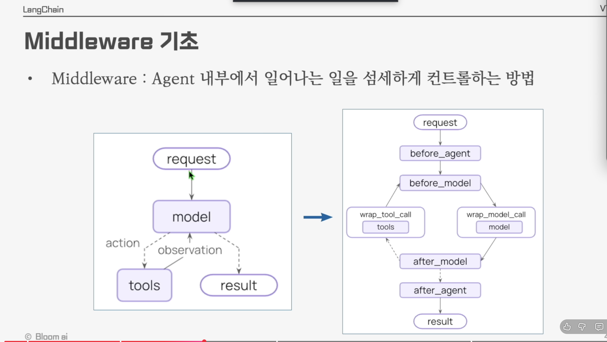
Middleware는 Agent 내부에서 일어나는 일을 섬세하게 컨트롤하는 방법입니다.
기존의 단순한 request → model → tools → result 흐름에서 각 단계 사이에 훅(hook)을 끼워 넣을 수 있습니다.
request
↓
before_agent
↓
before_model ←──────────────────┐
↓ │
wrap_tool_call wrap_model_call│
(tools) (model) │
↓ │
after_model ────────────────────┘
↓
after_agent
↓
result
즉 Middleware가 개입할 수 있는 지점은 before_agent / before_model /
wrap_model_call / wrap_tool_call / after_model / after_agent
여섯 곳입니다.
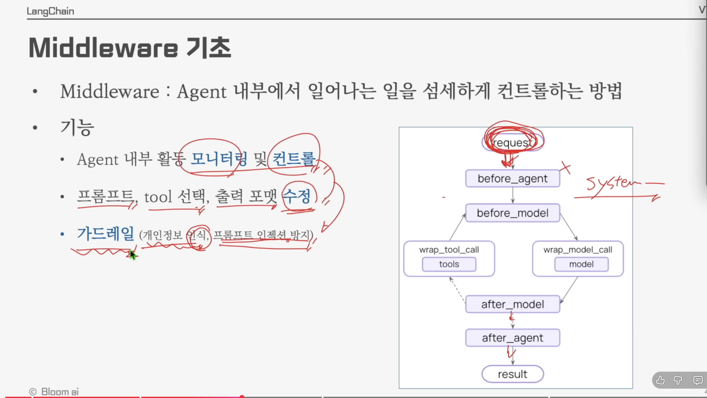
Middleware의 주요 기능
- Agent 내부 활동 모니터링 및 컨트롤 — 각 단계에서 로그 수집, 메트릭 기록
- 프롬프트, tool 선택, 출력 포맷 수정 — 요청 전처리 및 응답 후처리
- 가드레일 — 개인정보 감지(PII), 프롬프트 인젝션 방지, 욕설 필터링
3.2 Middleware 종류
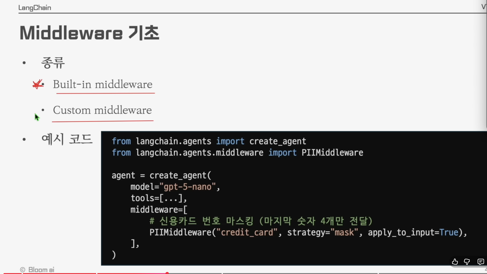
Middleware는 크게 두 종류로 나뉩니다.
| 종류 | 설명 |
|---|---|
| Built-in middleware | LangChain이 제공하는 내장 미들웨어 |
| Custom middleware | 개발자가 직접 작성하는 미들웨어 |
from langchain.agents import create_agent
from langchain.agents.middleware import PIIMiddleware
agent = create_agent(
model="gpt-5-nano",
tools=[...],
middleware=[
# 신용카드 번호 마스킹 (마지막 숫자 4개만 전달)
PIIMiddleware("credit_card", strategy="mask", apply_to_input=True),
],
)3.3 Built-in Middleware
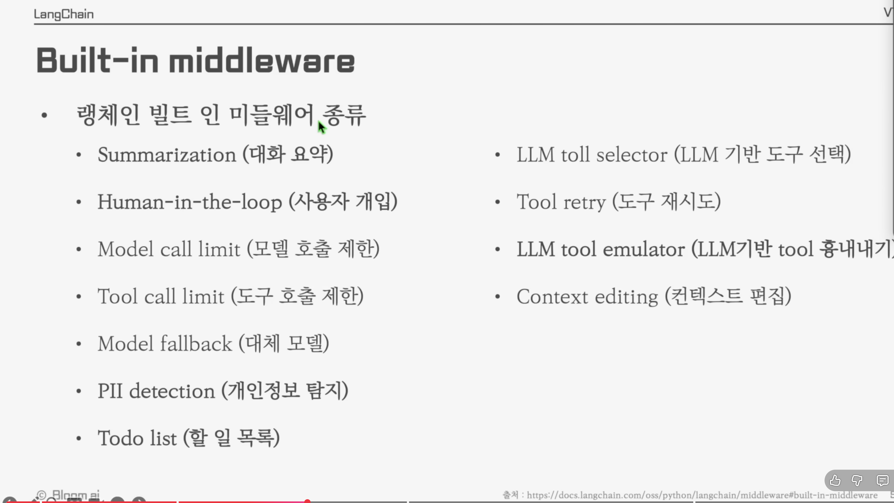
LangChain이 제공하는 내장 미들웨어 목록입니다.
| 미들웨어 | 기능 |
|---|---|
| Summarization | 대화 요약 |
| Human-in-the-loop | 사용자 개입 |
| Model call limit | 모델 호출 제한 |
| Tool call limit | 도구 호출 제한 |
| Model fallback | 대체 모델 |
| PII detection | 개인정보 탐지 |
| Todo list | 할 일 목록 |
| LLM tool selector | LLM 기반 도구 선택 |
| Tool retry | 도구 재시도 |
| LLM tool emulator | LLM 기반 tool 흉내내기 |
| Context editing | 컨텍스트 편집 |
이 중 실습에서 다루는 5개의 대표 미들웨어를 하나씩 살펴봅니다.
3.3.1 LLM Tool Emulator — LLM 기반 Tool 흉내내기
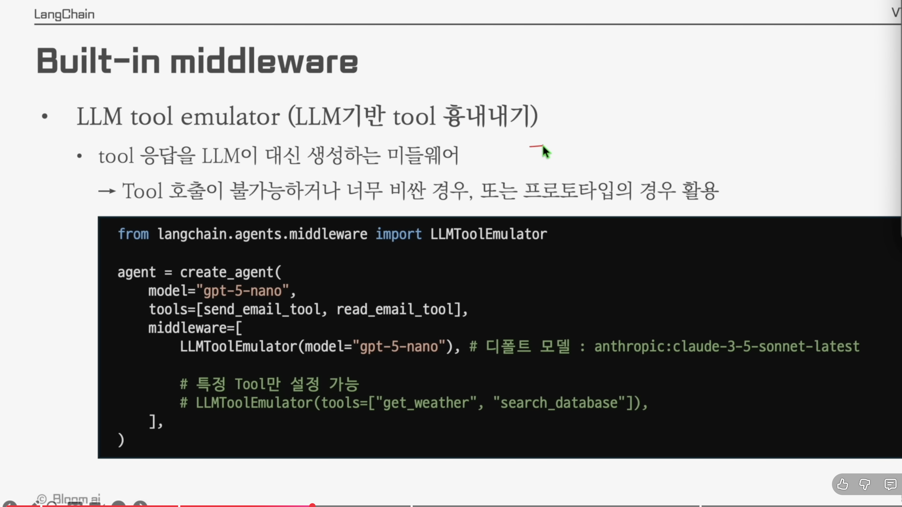
LLM Tool Emulator는 실제 Tool 호출 대신 LLM이 Tool의 응답을 시뮬레이션하는 미들웨어입니다.
- Tool 호출이 불가하거나 너무 비싼 경우
- 프로토타입 단계에서 실제 API 없이 개발할 때 활용
from langchain.agents.middleware import LLMToolEmulator
agent = create_agent(
model="gpt-5-nano",
tools=[send_email_tool, read_email_tool],
middleware=[
LLMToolEmulator(model="gpt-5-nano"), # 디폴트 모델: anthropic:claude-3-5-sonnet-latest
# 특정 Tool만 설정도 가능
# LLMToolEmulator(tools=["get_weather", "search_database"]),
],
)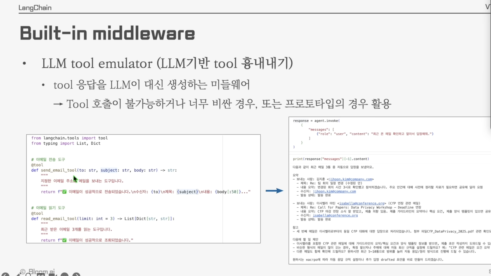
실제 이메일 백엔드 없이도 send_email_tool, read_email_tool을 흉내 낸 응답을 생성합니다.
로그를 보면 실제 Tool이 아닌 LLM이 생성한 더미 응답이 ToolMessage로 돌아오는 것을 확인할 수 있습니다.
LLMToolEmulator가 바로 이 소품·대역입니다.
Agent는 "이메일을 읽고 보냈다"고 그럴듯하게 연기하지만, 실제 메일함은 손끝 하나 대지 않습니다.
3.3.2 Todo List — 작업 단계 자동 계획
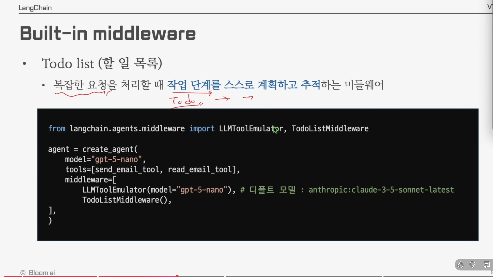
Todo List Middleware는 복잡한 요청을 처리할 때 Agent가 작업 단계를 스스로 계획하고 추적하도록 돕습니다.
from langchain.agents.middleware import LLMToolEmulator, TodoListMiddleware
agent = create_agent(
model="gpt-5-nano",
tools=[send_email_tool, read_email_tool],
middleware=[
LLMToolEmulator(model="gpt-5-nano"),
TodoListMiddleware(),
],
)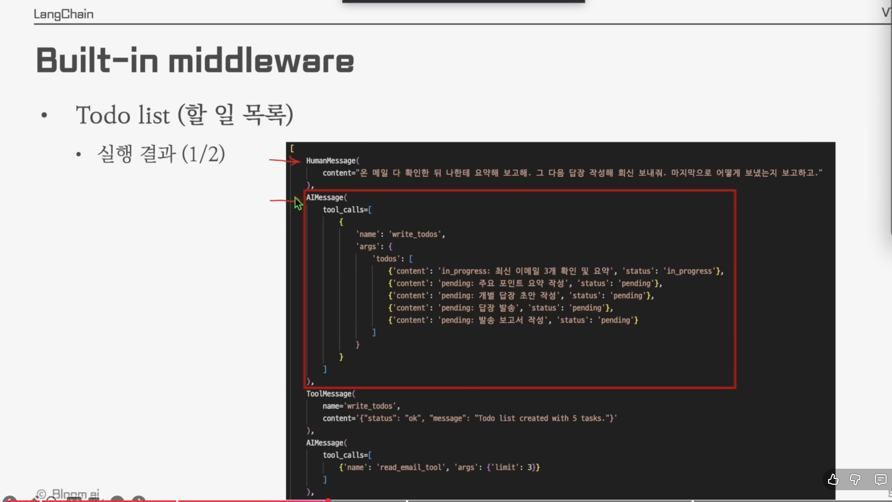
"온 메일 다 확인한 뒤 요약해 보고해. 그 다음 답장 작성해 회신 보내줘." 같은 복잡한 요청 시 Agent가
write_todos Tool을 호출해 할 일 목록을 만들고, 단계별로 status를
in_progress → completed로 업데이트하며 진행합니다.
{
"todos": [
{"content": "최신 이메일 3개 확인 및 요약", "status": "in_progress"},
{"content": "주요 포인트 요약 작성", "status": "pending"},
{"content": "개별 답장 초안 작성", "status": "pending"},
{"content": "답장 발송", "status": "pending"},
{"content": "발송 보고서 작성", "status": "pending"},
]
}
write_todos를 호출하지 않습니다.
TodoListMiddleware가 바로 이 주문표 시스템입니다. AI가 복잡한 요청을 받으면
스스로 주문표를 뽑아 걸고, 진행 상황을 하나씩 지워가며 관리합니다.
3.3.3 Human-in-the-loop — 사용자 개입
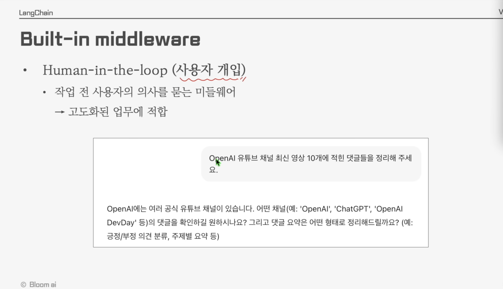
Human-in-the-loop Middleware는 작업 전 사용자의 의사를 묻는 미들웨어입니다. 이메일 발송, 결제 처리 등 부작용(Side Effect)이 크거나 되돌리기 어려운 작업에 적합합니다.
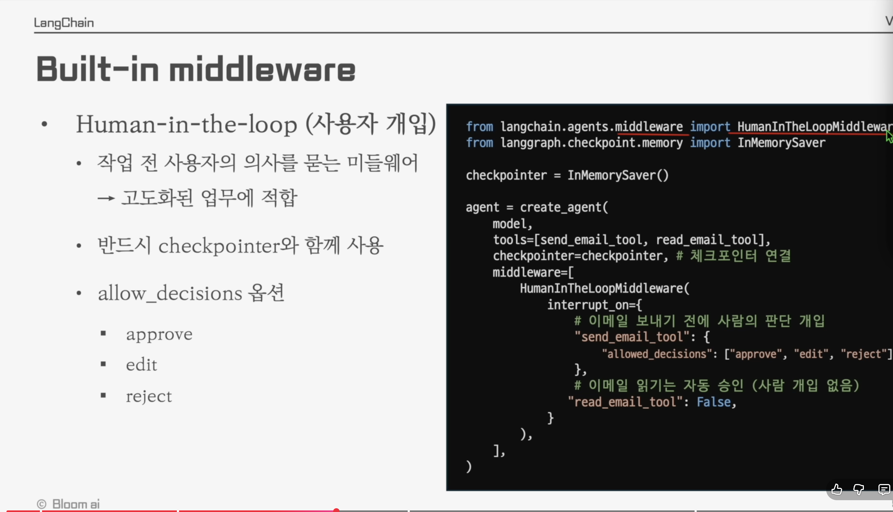
from langchain.agents.middleware import HumanInTheLoopMiddleware
from langgraph.checkpoint.memory import InMemorySaver
# Human-in-the-loop는 반드시 checkpointer와 함께 사용해야 합니다.
checkpointer = InMemorySaver()
agent = create_agent(
model,
tools=[send_email_tool, read_email_tool],
checkpointer=checkpointer,
middleware=[
HumanInTheLoopMiddleware(
interrupt_on={
# 이메일 보내기 전 사람의 판단 개입 (approve / edit / reject 중 선택)
"send_email_tool": {"allowed_decisions": ["approve", "edit", "reject"]},
# 이메일 읽기는 자동 승인 (사람 개입 없음)
"read_email_tool": False,
}
),
],
)
Agent가 send_email_tool을 호출하려는 순간, 실행이 일시정지(Interrupt)되고
__interrupt__ 키와 함께 결과가 반환됩니다. 사용자의 결정이 확인되면 같은 thread_id로
invoke를 다시 호출해 실행을 재개합니다.
# 첫 번째 invoke: 미들웨어가 send_email_tool 호출을 막고 __interrupt__ 반환
response = agent.invoke(
{"messages": [{"role": "user", "content": "jasper@gmail.com에게 메일 보내줘"}]},
{"configurable": {"thread_id": "HIL-1"}}
)
# response["__interrupt__"] 에 승인 대기 중인 도구 정보 담겨 있음
# 두 번째 invoke: 사용자 승인 후 실행 재개
response = agent.invoke(
{"decision": "approve"},
{"configurable": {"thread_id": "HIL-1"}}
)HumanInTheLoopMiddleware가 InMemorySaver(Checkpointer)와 함께 사용되는 이유는,
멈췄던 지점의 상태(state)를 thread_id 기준으로 기억해야 나중에 재개할 수 있기 때문입니다.
2.1절의 "수첩과 펜" 비유 그대로 — 멈춘 페이지를 수첩에 적어 두었다가, 다시 그 페이지를 펼쳐 이어가는 것입니다.
3.3.4 PII Detection — 개인정보 탐지
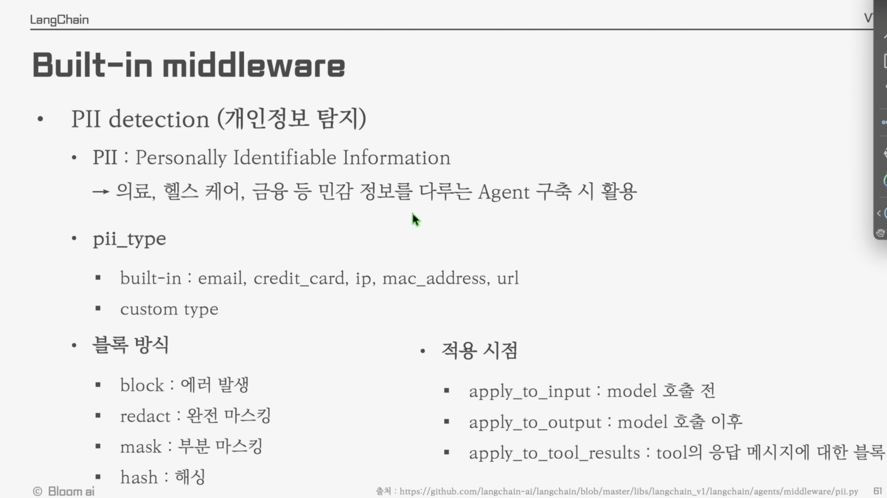
PII(Personally Identifiable Information) Middleware는 의료, 헬스 케어, 금융 등 민감 정보를 다루는 Agent 구축 시 필수적으로 활용됩니다.
Built-in PII 유형
email, credit_card, ip, mac_address, url 등
처리 전략 (strategy)
| 전략 | 설명 | 예시 |
|---|---|---|
| block | 에러 발생 (실행 중단) | — |
| redact | 완전 마스킹 | [REDACTED_EMAIL] |
| mask | 부분 마스킹 | ************4321 |
| hash | 해싱 처리 | a3f2... |
적용 시점 (apply_to)
| 옵션 | 시점 |
|---|---|
apply_to_input | model 호출 전 |
apply_to_output | model 호출 이후 |
apply_to_tool_results | tool의 응답 메시지에 대한 블록 |
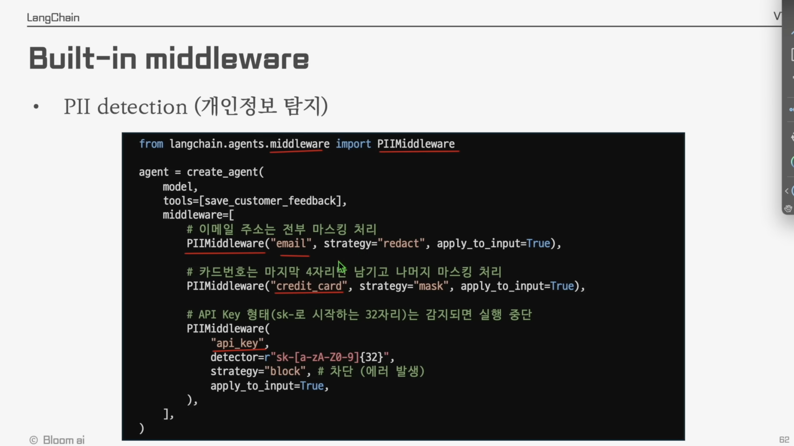
from langchain.agents.middleware import PIIMiddleware
agent = create_agent(
model,
tools=[save_customer_feedback],
middleware=[
# 이메일 주소는 전부 마스킹 처리
PIIMiddleware("email", strategy="redact", apply_to_input=True),
# 카드번호는 마지막 4자리만 남기고 나머지 마스킹 처리
PIIMiddleware("credit_card", strategy="mask", apply_to_input=True),
# API Key 형태(sk-로 시작하는 32자리)는 감지되면 실행 중단
PIIMiddleware(
"api_key",
detector=r"sk-[a-zA-Z0-9]{32}",
strategy="block",
apply_to_input=True,
),
],
)PIIMiddleware가 바로 그 검열 담당자입니다. 사용자의 말이 모델에게 도착하기 전,
중간에서 가로채 개인정보만 골라 까맣게 칠하는 것이죠. 모델은 처음부터 지워진 버전만 받으므로,
원본이 실수로 새어 나갈 일이 없습니다.
3.3.5 Summarization — 대화 요약
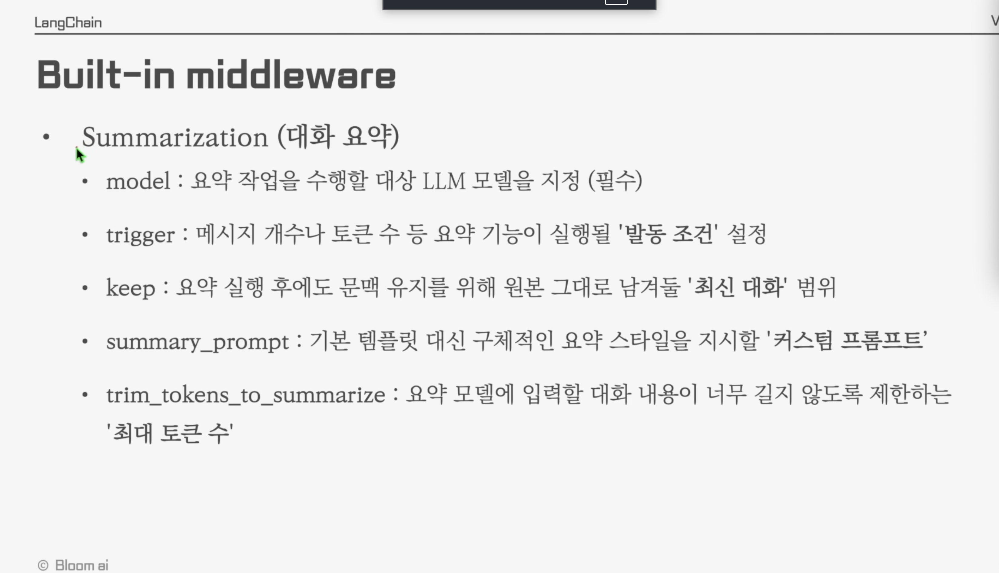
Summarization Middleware는 대화가 길어질 때 오래된 메시지를 자동으로 요약하여 토큰 사용량을 줄입니다.
| 파라미터 | 설명 |
|---|---|
model | 요약 작업을 수행할 대상 LLM 모델 지정 (필수) |
trigger | 메시지 개수나 토큰 수 등 요약 기능이 실행될 발동 조건 설정 |
keep | 요약 실행 후에도 문맥 유지를 위해 원본 그대로 남겨둘 최신 대화 범위 |
summary_prompt | 기본 템플릿 대신 구체적인 요약 스타일을 지시할 커스텀 프롬프트 |
trim_tokens_to_summarize | 요약 모델에 입력할 대화 내용이 너무 길지 않도록 제한하는 최대 토큰 수 |
SummarizationMiddleware가 하는 일이 정확히 이것입니다 — 오래된 대화(메시지)는
trigger 조건에 따라 요약본으로 압축하고, keep으로 지정한 최근 대화만 원문 그대로
남겨 토큰을 절약합니다.
3.4 Custom Middleware
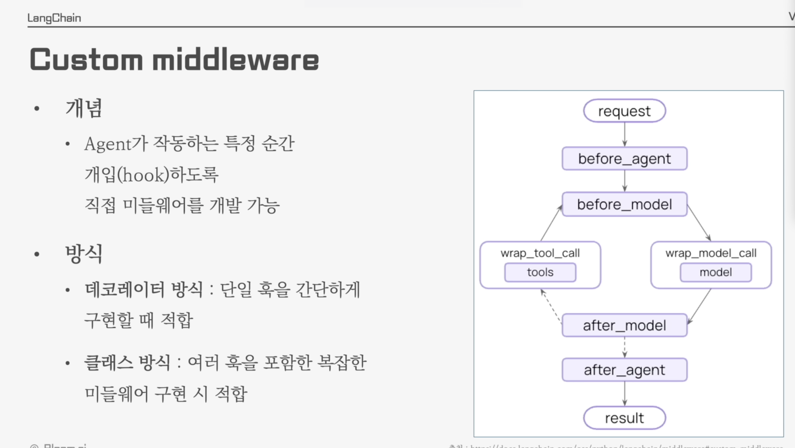
Built-in 미들웨어로 해결이 안 되는 경우, 직접 미들웨어를 개발할 수 있습니다. Agent가 작동하는 특정 순간에 개입(hook)하는 로직을 직접 작성합니다.
구현 방식
| 방식 | 설명 | 적합한 경우 |
|---|---|---|
| 데코레이터 방식 | @before_agent, @after_model 등 단일 훅 함수에 데코레이터 적용 | 단일 훅을 간단하게 구현할 때 |
| 클래스 방식 | 미들웨어 베이스 클래스를 상속해 여러 메서드 구현 | 여러 훅을 포함한 복잡한 미들웨어 구현 시 |
개입 가능한 훅 포인트: before_agent / before_model / wrap_model_call /
wrap_tool_call / after_model / after_agent
4.1 Agent에서 Structured Output
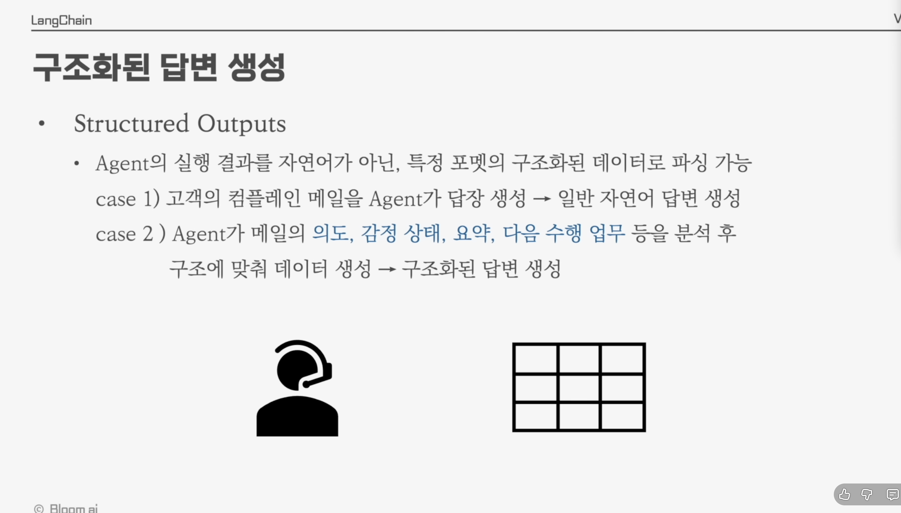
Agent의 실행 결과를 자연어가 아닌 특정 포맷의 구조화된 데이터로 파싱할 수 있습니다.
| 케이스 | 설명 |
|---|---|
| case 1 | 고객의 컴플레인 메일을 Agent가 답장 생성 → 일반 자연어 답변 생성 |
| case 2 | Agent가 메일의 의도, 감정 상태, 요약, 다음 수행 업무 등을 분석 후 구조에 맞춰 데이터 생성 → 구조화된 답변 생성 |
4.2 Pydantic으로 출력 구조 정의
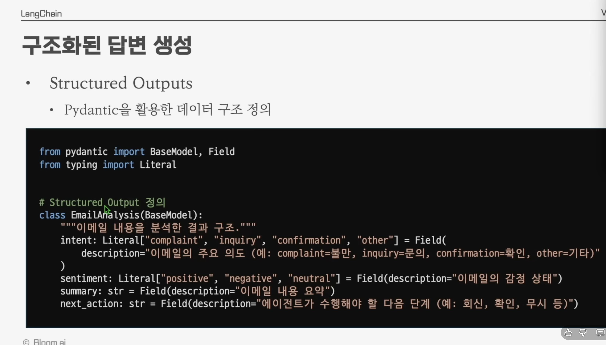
1장에서 배운 Pydantic을 사용해 Agent의 최종 출력 구조를 정의합니다.
from pydantic import BaseModel, Field
from typing import Literal
class EmailAnalysis(BaseModel):
"""이메일 내용을 분석한 결과 구조."""
intent: Literal["complaint", "inquiry", "confirmation", "other"] = Field(
description="이메일의 주요 의도 (예: complaint=불만, inquiry=문의, confirmation=확인, other=기타)"
)
sentiment: Literal["positive", "negative", "neutral"] = Field(
description="이메일의 감정 상태"
)
summary: str = Field(description="이메일 내용 요약")
next_action: str = Field(description="에이전트가 수행해야 할 다음 단계 (예: 회신, 확인, 무시 등)")summary는 아무 문장이나 써도 되는 주관식 칸입니다(str).
반면 intent는 Literal["complaint", "inquiry", "confirmation", "other"] —
즉 정해진 네 개의 버튼 중 하나만 누를 수 있는 자판기와 같습니다.
Agent가 "아마 컴플레인 같기도 하고요…" 같은 애매한 답을 쓰지 못하고, 반드시 이 네 값 중 하나로만
답하게 강제합니다.
4.3 ToolStrategy로 Agent에 구조 적용
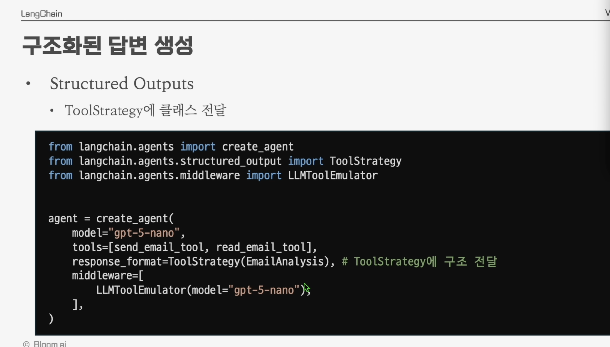
create_agent의 response_format 파라미터에 ToolStrategy(스키마클래스)를
전달하면 Agent의 최종 응답이 해당 구조로 강제됩니다.
from langchain.agents import create_agent
from langchain.agents.structured_output import ToolStrategy
from langchain.agents.middleware import LLMToolEmulator
agent = create_agent(
model="gpt-5-nano",
tools=[send_email_tool, read_email_tool],
response_format=ToolStrategy(EmailAnalysis), # ToolStrategy에 구조 전달
middleware=[
LLMToolEmulator(model="gpt-5-nano"),
],
)
response = agent.invoke({"messages": [{"role": "user", "content": "최근 온 메일을 읽고 분석해줘."}]})
# messages[-1].content 대신 structured_response 키로 바로 접근
analysis = response["structured_response"]
print(analysis.intent)
print(analysis.sentiment)
print(analysis.summary)'inquiry' 'neutral' '고객이 환불을 요청하고 있습니다.'
response_format=ToolStrategy(EmailAnalysis)를 사용하면 response["structured_response"]로
Pydantic 객체에 직접 접근할 수 있어, .content를 파싱하는 번거로움이 없습니다.
response_format=ToolStrategy(EmailAnalysis)가 바로 그 "이 서식으로 제출해"라는
지시입니다. Agent가 도구를 쓰고 이런저런 추론을 하다가도, 마지막 제출물만큼은 반드시
이 서식(EmailAnalysis)에 맞춰 내놓아야 합니다.
response["messages"][-1].content는 손편지가 든 봉투를 받는 것과 같습니다 —
뜯어서 사람이 읽고 뜻을 해석해야 하죠. 반면 response["structured_response"]는
누군가 그 편지를 미리 읽고 항목별로 칸을 채워 넣은 표를 건네받는 것과 같습니다.
"의도: 문의 / 감정: 중립 / 요약: … / 다음 조치: …" — 파싱이라는 번거로운 단계가 통째로 사라집니다.
📚 2장 정리
- Tool은 LLM이 외부 시스템과 상호작용하기 위한 함수다.
@tool데코레이터와docstring으로 정의하고,create_agent로 모델에 연결한다. - Agent 내부 동작: LLM이
tool_calls를 결정 → Tool 실행 →ToolMessage반환 → 최종 응답 생성의 6단계 흐름으로 작동한다. - Memory:
InMemorySaver+thread_id로 Short-term memory를 구현한다. 같은thread_id이면 대화가 이어지고, 다르면 새 세션이 시작된다. - Middleware: Agent 흐름의 각 단계에 개입해 모니터링, 프롬프트 수정, 가드레일 등을 추가한다.
- LLM Tool Emulator: 실제 API 없이 Tool 응답을 시뮬레이션
- Todo List: 복잡한 요청을 단계별 Todo로 관리
- Human-in-the-loop: 위험한 Tool 실행 전 사람의 승인 필요
- PII Detection: 개인정보 탐지 및 마스킹/차단
- Summarization: 긴 대화를 자동 요약해 토큰 절약
- Structured Output:
ToolStrategy(PydanticClass)를response_format에 전달해 Agent의 최종 응답을 구조화된 데이터로 받는다.